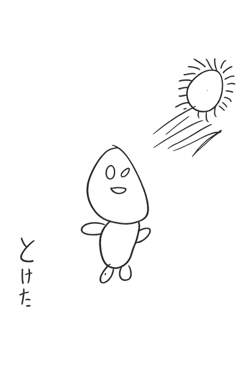
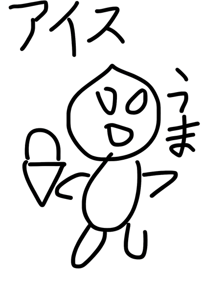

Lv.1
🌡️
体温
たいおん
🏃
🍧
👕
涼感
りょうかん
シャツ
🪙
0
📱
スマホを よこにしてね!
このゲームは よこ
画面
がめん
であそぶよ 🍧
🛒 エイリアンショップ
もっているコイン 🪙
0
つぎのレベルへ ▶
ショップへ ▶
スキップしてショップへ
◀
▶
ジャンプ


ひかげでゴー!
☀️
日陰
ひかげ
をすすんで かき
氷屋
ごおりや
さんへ! 🍧
スタート!
◀ ▶ うごく ／ ジャンプでとぶ
さいしょからやりなおす(データをけす)
つぎのレベルへ ▶
もういちど